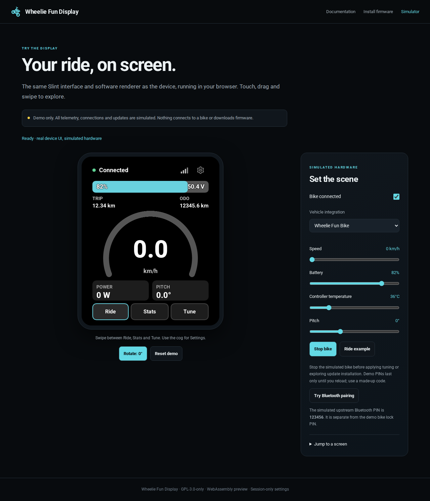
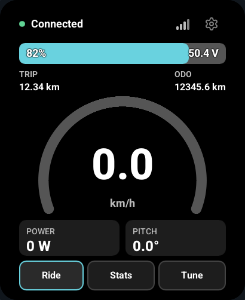
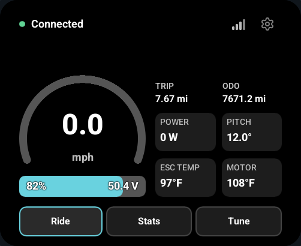
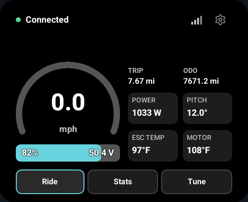
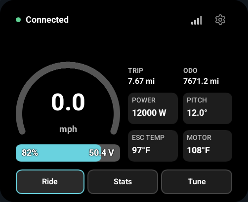
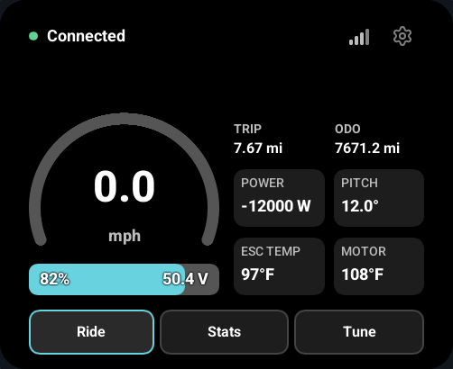
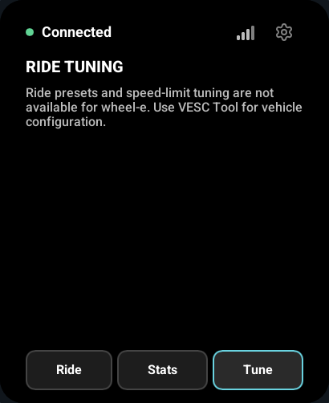
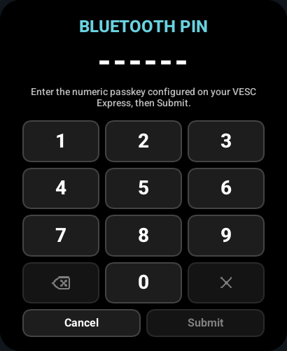
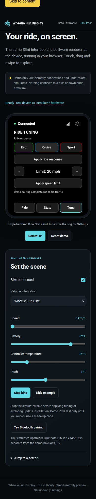

CI BROWSER EVIDENCE
Touchscreen checks
Captured from this build's shared Slint UI. The browser exercises the actual WebAssembly touchscreen with simulated hardware. These pictures are review evidence, not hardware acceptance results or pixel-baseline comparisons.
- Root and project-prefix routes
- Shared UI software rendering
- Telemetry controls
- Ride/Stats/Tune swipes
- Four-angle rotation and touch mapping
- Independent speed and temperature units
- Upstream BLE pairing PIN
- Bike PIN setup and screen unlock
- Proxy name keyboard
- Responsive mobile and touch








